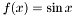
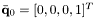
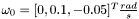
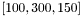
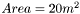
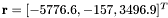
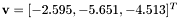

Table of Contents : Introduction to the Open-Sessame Framework : Tutorial Answers Page
The following sections are sets of tutorials meant to lead the user through the basics of using the Open-Sessame Framework all the way to creating a full spacecraft simulation application. Each section is a listing of a textual description of the problem to be solved, followed by a reference to the answer sheet. Don't cheat! Following the successful completion of each lesson, the user should move onto the next lesson until all the tutorials are complete.
- Running Tutorials:
- To build and run a tutorial, (after writing your file, e.g. myFile.cpp) follow the following instructions:
- Put the .cpp file in the spacecraft/src/test directory:
cp myFile.cpp spacecraft/src/test
cd spacecraft/src/test or use whatever method you choose for getting it there (ftp, sftp, scp, drag -n- drop, mv, etc.)
- Build the program by running the generalized makefile with the target of your source file, minus the cpp extension:
make myFile
- Run the program in the same directory (the executable will be the same as the source file minus the extension):
./myFile
- Debug the code (unless your implementation was perfect, then check your answers)
Rotation Tutorials
- Create a Quaternion that has the initial parameters (0.5,0.5,0.5,0.5).
- Output this quaternion to the console in both quaternion and Modified Rodriguez Parameters (MRP) form.
- Create a Direction Cosine Matrix corresponding to a 321 rotation with angles: 10, -30, 150 degrees.
- Create 2 "Rotation"s that are intialized by the quaternion and Direction Cosine Matrix.
- Determine the successive rotation of these two rotations and output to the console in DCM form.
- Verify that the answer you got was the correct (expected) one.
Tutorial Answers Page
Utility Tutorials
- Create an ssfTime object, set the epoch to the current real time, and the stored 'current' time to 50 seconds later. Output both of these in DateTime and JulianDate format to the console.
- Plot a Matrix of values corresponding to the  for using the Open-Sessame GnuPlot interface.
- Create a linear interpolation of the function using a step-size of 0.1
Tutorial Answers Page
Attitude Tutorials
- Create an AttitudeState object instance that is initialized to an aligned rotation in the Orbit-Inertial Frame (attitudeframe not yet implemented fully).
- Integrate an attitude for 50 seconds using the following conditions:
- Quaternion Kinematics
- Euler's equations of motion
- Gravity-gradient torque disturbance
- Initial conditions of:  and .
- Principle Moments of Inertia: 
- Store the attitude to a text file.
- Plot the attitude history using GnuPlot.
- Store the attitude in DirectionCosineMatrix format in a MatLab file.
Attitude Tutorial Answer
Orbit Tutorials
- Create an OrbitState object instance that is initialized to the current state of the spacestation in inertial coordinates.
- Convert to ECEF coordinates and output to the console.
- Integrate an orbit for 2 orbits using the following conditions:
- 2-body force function above the Earth (mass = 200 kg).
- Solar-radiation pressure force disturbance (assume constant ).
- Initial conditions of:  (km) and  (km/s).
- Store the position and velocity to a text file.
- Plot the orbit position vector using GnuPlot.
- Store the orbit Keplerian parameters in a MatLab file.
Orbit Tutorial Answer
Coupled Attitude & Orbit Tutorials
- Create an Environment object of the Earth using the above (Orbit & Attitude) disturbance force & torque functions.
- Create a Propagator that will propagate the above Orbit & Attitude objects and using the Environment object.
- Use a linear interpolator for the OrbitHistory.
- Use loose coupling (orbit independent of attitude, but attitude dependent on position).
- Propagate the orbit and attitude for 2 orbits.
- Plot the position and attitude using gnuplot.
- Propagate another 2 orbits.
- Add the new states to the previously made plots.
Coupled Tutorial Answers
 1.9.1
1.9.1